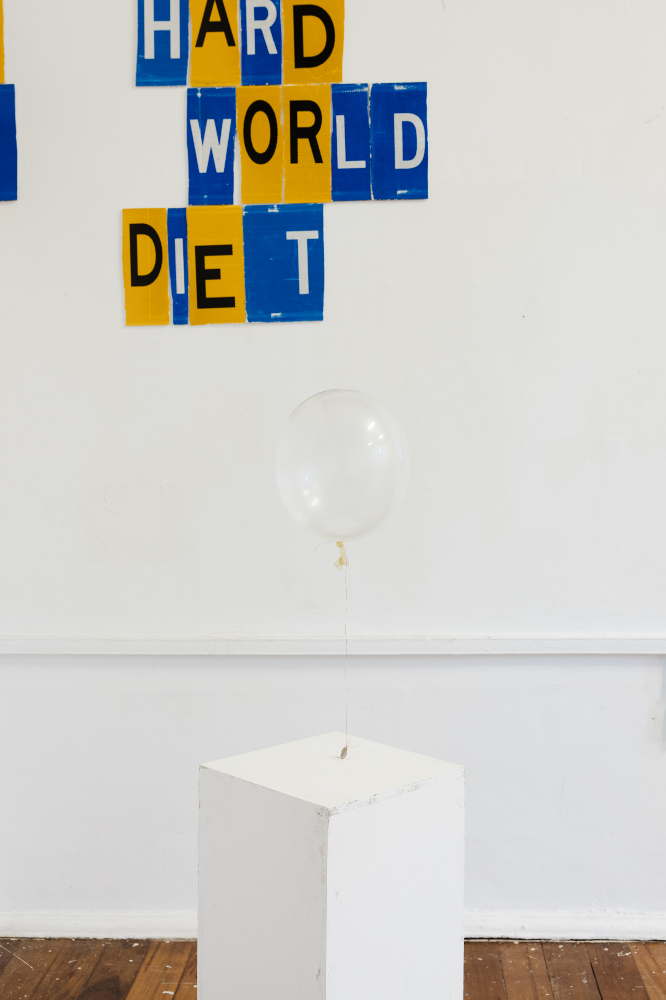
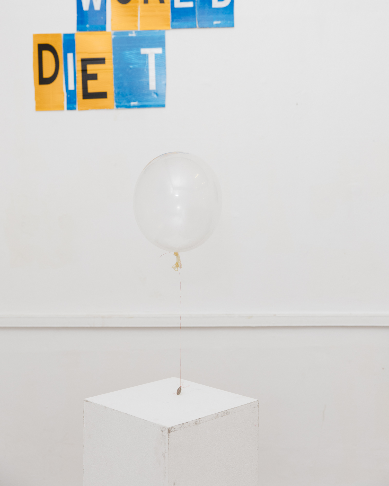
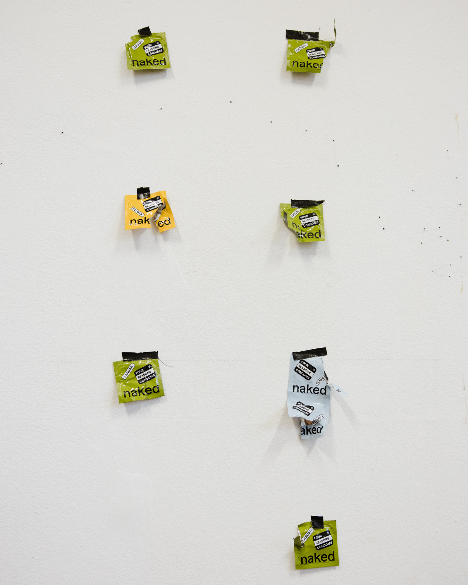

Hustlers, 2026. Condoms, helium, wire, coins. Dimensions variable. Hustlers (2026), is a time-based sculptural installation consisting of helium filled condoms tied to coins with exposed electrical wire. During the course of the installation, the objects fall slowly from the ceiling, and sit with the coin lightly lifted above ground. They are sensitive to movement from audiences in the space, and move in unpredictable directions, chasing viewers like a ghost, dragging the coin along the ground behind them. Over the course of the installation, the condoms deflate, and the objects retire as static arrangements.